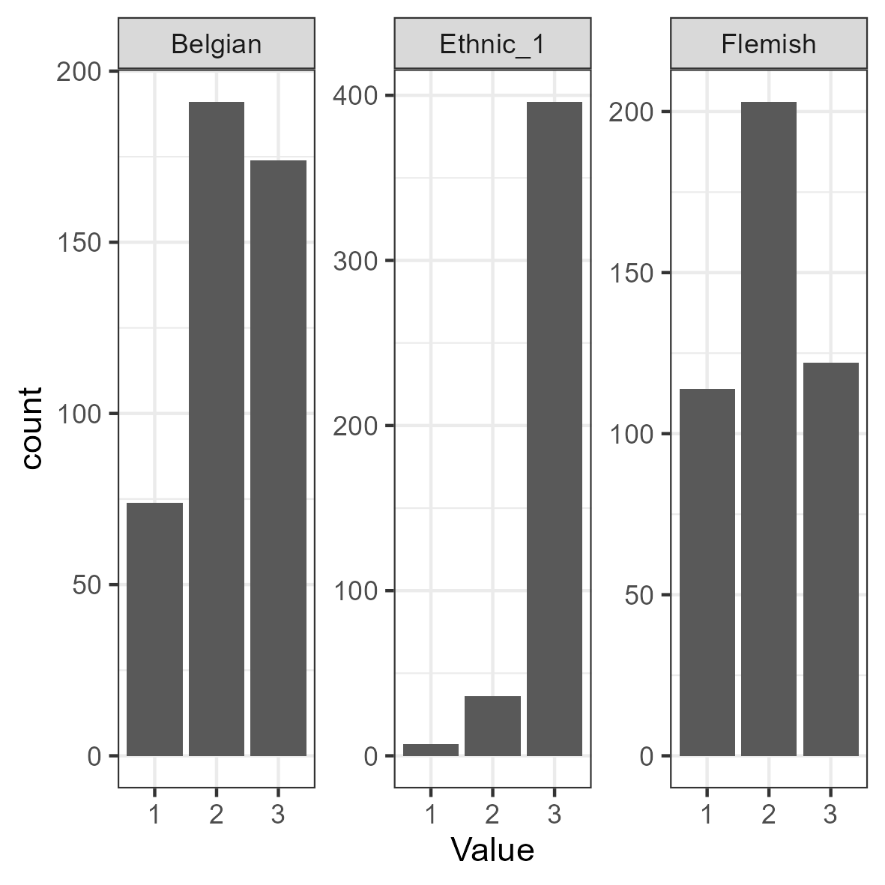
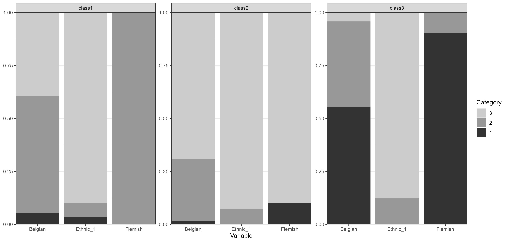

This is an example of exploratory LCA with ordinal indicators using
tidySEM, as explained in Van Lissa, C. J.,
Garnier-Villarreal, M., & Anadria, D. (2023). Recommended
Practices in Latent Class Analysis using the Open-Source R-Package
tidySEM. Structural Equation Modeling.
The present example uses synthetic data based on a study by Maene, D’hondt, Van Lissa, Thijs, & Stevens (2022). In a convenience sample of Flemish (Belgian) high-school students with a migration background, this study set out to identify distinct classes based on ordinal indicators of National, Regional, and Heritage identity. Sample size was not justified.
In the original study, the approach to class enumeration was semi-theory driven: The researchers expected to find profiles that were distinct on all three types of identity (national, regional, and heritage) - but the exact number of classes was not pre-specified (hypothesis 1).
Hypothesis 2 stated that adolescents who are nationally integrated would have lower depressive feelings than students from students with other combinations of identifications (hypothesis 2). Hypothesis 3 was that, for assimilated and separated adolescents, there would not be a significant effect of perceived teacher discrimination on depressive symptoms.
Use the command ?tidySEM::maene_identity to view the
data documentation.
Loading the Data
To load the data, simply attach the tidySEM package. For
convenience, we assign the indicator data to an object called
df. As the analyses take a long time to run, this tutorial
reduces the data to three identity indicators and collapses their
ordered response categories into three levels. This is a teaching
simplification, do not do this for substantive analyses: collapsing
categories discards information and changes the estimated latent
classes.
# Load required packages
library(tidySEM)
library(ggplot2)
# Load data Keep one indicator for each identity domain and
# collapse adjacent categories. This deliberately smaller
# example makes ordinal mixture estimation faster.
ordinal3 <- function(x) {
z <- as.integer(x)
observed <- sort(unique(z[!is.na(z)]))
if (length(observed) < 3L)
stop("Indicator has fewer than three observed categories")
# Collapse ordered response categories into three
# approximately equal ranges.
groups <- cut(seq_along(observed), breaks = 3L, labels = FALSE)
ordered(groups[match(z, observed)], levels = 1:3)
}
df <- maene_identity[c("Ethnic_1", "Belgian", "Flemish")]
df[] <- lapply(df, ordinal3)
# Auxiliary variables must correspond to the same rows as
# the indicators.
aux_data <- maene_identityExamining the Data
We use tidySEM::descriptives() to describe the data
numerically. Because all items are categorical, we remove columns for
continuous data to de-clutter the table:
desc <- tidySEM::descriptives(df)
desc <- desc[, c("name", "type", "n", "missing", "unique", "mode",
"mode_value", "v")]
desc| name | type | n | missing | unique | mode | mode_value | v |
|---|---|---|---|---|---|---|---|
| Ethnic_1 | ordered, factor | 439 | 0 | 3 | 396 | 3 | 0.18 |
| Belgian | ordered, factor | 439 | 0 | 3 | 191 | 2 | 0.63 |
| Flemish | ordered, factor | 439 | 0 | 3 | 203 | 2 | 0.64 |
Additionally, we can plot the data. The ggplot2 function
geom_bar() is useful for ordinal data:
df_plot <- df
names(df_plot) <- paste0("Value.", names(df_plot))
df_plot <- reshape(df_plot, varying = names(df_plot), direction = "long")
ggplot(df_plot, aes(x = Value)) + geom_bar() + facet_wrap(~time,
scales = "free") + theme_bw()
Bar charts for ordinal indicators
As we can see, the descriptives() table provides
invaluable information about the measurement level of the indicators,
which is used to specify the model correctly. If these data had not been
coded as ordinal factors, these descriptive statistics would have
revealed that each variable has only a few distinct values. The
proportion of missing values is reported in the "missing"
column. If any variables had missing values, we would report an MCAR
test with mice::mcar() and explain that missing data are
accounted for using FIML. In our example, we inspect missingness before
proceeding with our analysis.
Conducting Latent Class Analysis
Before we fit a series of LCA models, we set a random seed using
set.seed(). This is important because there is some
inherent randomness in the estimation procedure, and using a seed
ensures that we (and others) can exactly reproduce the results.
Next, we fit the LCA models. As all variables are ordinal, we can use
the convenience function tidySEM::mx_lca(), which is a
wrapper for the generic function mx_mixture() optimized for
LCA with ordinal data. Any mixture model can be specified through
mx_mixture(). At the time of writing, there are two other
wrapper functions for special cases: mx_profiles(), for
latent profile analysis, and mx_growth_mixture(), for
latent growth analysis and growth mixture models. All of these functions
have arguments data and number of classes. All
variables in data are included in the analysis, so relevant
variables must be selected first.
We consider one- through three-class models. Limiting the number of classes and categories makes this tutorial faster to reproduce. A substantive analysis should investigate a broader range of plausible models and use the original measurement scale where feasible.
Class Enumeration
In class enumeration, we want to compare a sequence of LCA models
fitted to the data. Convergence must be checked for each fitted model.
If a model with ordinal indicators does not converge, it is possible to
aid convergence using mxTryHardOrdinal(), which expands the
search for optimal parameter values for models with ordinal indicators.
It is part of the family of functions based on
mxTryHard().
Next, we create a model fit table using table_fit() and
retain relevant columns. We also determine whether any models can be
disqualified.
fit <- table_fit(res)
fit[, c("Name", "LL", "n", "Parameters", "BIC", "Entropy", "prob_min",
"n_min", "np_ratio", "np_local")]| Name | LL | n | Parameters | BIC | Entropy | prob_min | n_min | np_ratio | np_local |
|---|---|---|---|---|---|---|---|---|---|
| 1 | -1078 | 439 | 6 | 2193 | 1.00 | 1.00 | 1.00 | 73 | 73 |
| 2 | -1012 | 439 | 13 | 2103 | 0.77 | 0.85 | 0.30 | 34 | 22 |
| 3 | -997 | 439 | 20 | 2115 | 0.89 | 0.88 | 0.23 | 22 | 17 |
Inspect the ratio of cases to parameters (np_ratio and
np_local) alongside classification diagnostics such as
entropy and minimum classification probability. Models with small
classes or unstable estimates require particular caution.
Class Enumeration
Interpreting the Final Class Solution
Assess class sizes, entropy, and classification probabilities for the
fitted three-class solution. The results below are based on the
simplified dataset and should not be compared numerically with the
original full-data example. We can produce a table of results using
table_results(res_final). However, the results are
thresholds, indicating quantiles of a standardized normal distribution.
These may be difficult to interpret. Therefore, we ask for the results
in probability scale:
tab <- table_prob(res_final)
reshape(tab, direction = "wide", v.names = "Probability", timevar = "group",
idvar = c("Variable", "Category"))| Variable | Category | Probability.class1 | Probability.class2 | Probability.class3 |
|---|---|---|---|---|
| Ethnic_1 | 1 | 0.04 | 0.00 | 0.00 |
| Ethnic_1 | 2 | 0.06 | 0.07 | 0.12 |
| Ethnic_1 | 3 | 0.90 | 0.93 | 0.88 |
| Belgian | 1 | 0.05 | 0.02 | 0.56 |
| Belgian | 2 | 0.55 | 0.29 | 0.40 |
| Belgian | 3 | 0.39 | 0.69 | 0.04 |
| Flemish | 1 | 0.00 | 0.10 | 0.90 |
| Flemish | 2 | 1.00 | 0.00 | 0.10 |
| Flemish | 3 | 0.00 | 0.90 | 0.00 |
The results can also be interpreted by plotting the response probabilities:
plot_prob(res_final, bw = TRUE)
Probability plot
Use the response-probability plot to compare the identity patterns across classes. Class labels should be chosen based on the newly estimated probabilities rather than carried over from the original analysis.
Auxiliary Analyses
To address the remaining two hypotheses, we will perform auxiliary analyses. Hypothesis 2 stated that adolescents who are nationally integrated would have lower depressive feelings than students from students with other combinations of identifications (hypothesis 2).
To test this hypothesis, we can call the BCH function and supply the
auxiliary variable depression to the data argument,
omitting the model argument. Below, we estimate an
auxiliary model to compare depressive symptoms across classes:
aux_dep <- BCH(res_final, data = aux_data$depression)To obtain an omnibus likelihood ratio test of the significance of
depression differences across classes, as well as pairwise comparisons
between classes, use lr_test(aux_dep). Interpret the
omnibus and pairwise tests using the results from the simplified
example; numerical conclusions from the original analysis do not
necessarily carry over.
Hypothesis 3 was that, for assimilated and separated adolescents, there would not be a significant effect of perceived teacher discrimination on depressive symptoms. To test this hypothesis, we will compare the regression coefficient of discrimination on depressive symptoms across classes.
df_aux <- aux_data[, c("vict_teacher", "depression")]
# Dummy-code vict_teacher
df_aux$vict_teacher <- (as.integer(df_aux$vict_teacher) - 1)
aux_model <- BCH(res_final, model = "depression ~ vict_teacher",
data = df_aux)To view the coefficients of this model, we can use either
coef(aux_model) or
table_results(aux_model, columns = NULL). The regression
coefficients are represented by paths in the class-specific
A matrices.
table_results(aux_model, columns = c("label", "est_sig", "se",
"pval", "confint", "group", "matrix"))#> label est_sig se pval
#> 1 Regressions.depression.ON.vict_teacher.class1 -0.00 0.10 1.00
#> 2 Means.depression.class1 2.74*** 0.06 0.00
#> 3 Means.vict_teacher.class1 0.37*** 0.03 0.00
#> 4 Variances.depression.class1 0.41*** 0.04 0.00
#> 5 Variances.vict_teacher.class1 0.23*** 0.02 0.00
#> 6 Regressions.depression.ON.vict_teacher.class2 -0.12 0.12 0.32
#> 7 Means.depression.class2 2.86*** 0.06 0.00
#> 8 Means.vict_teacher.class2 0.25*** 0.04 0.00
#> 9 Variances.depression.class2 0.35*** 0.04 0.00
#> 10 Variances.vict_teacher.class2 0.19*** 0.02 0.00
#> 11 Regressions.depression.ON.vict_teacher.class3 -0.14 0.13 0.28
#> 12 Means.depression.class3 2.66*** 0.08 0.00
#> 13 Means.vict_teacher.class3 0.36*** 0.05 0.00
#> 14 Variances.depression.class3 0.44*** 0.06 0.00
#> 15 Variances.vict_teacher.class3 0.23*** 0.03 0.00
#> confint group matrix
#> 1 [-0.19, 0.19] class1 A
#> 2 [2.63, 2.86] class1 M
#> 3 [0.30, 0.44] class1 M
#> 4 [0.33, 0.49] class1 S
#> 5 [0.19, 0.28] class1 S
#> 6 [-0.35, 0.11] class2 A
#> 7 [2.74, 2.97] class2 M
#> 8 [0.17, 0.32] class2 M
#> 9 [0.27, 0.44] class2 S
#> 10 [0.14, 0.23] class2 S
#> 11 [-0.40, 0.11] class3 A
#> 12 [2.51, 2.81] class3 M
#> 13 [0.27, 0.45] class3 M
#> 14 [0.32, 0.55] class3 S
#> 15 [0.17, 0.29] class3 SThere are two ways to test whether the regression coefficients differ across classes.
First, we can use a likelihood-ratio test to compare the regression
coefficients in the class-specific A matrices:
lr_test(aux_model, compare = "A")#> BCH test for equality across classes
#>
#> Overall likelihood ratio test:
#> LL_baseline LL_restricted LL_dif df p
#> 1414 1415 1 2 0.6
#>
#> Pairwise comparisons using likelihood ratio tests:
#> Model1 Model2 LL_baseline LL_restricted LL_dif df p
#> class1 class2 1414 1414 0.60 1 0.44
#> class1 class3 1414 1414 0.77 1 0.38
#> class2 class3 1414 1414 0.02 1 0.89Alternatively, we can use a Wald test to evaluate the equality constraints directly:
wald_test(aux_model, "class1.A[1,2]=class2.A[1,2]&class1.A[1,2]=class3.A[1,2]")#> Wald tests for linear hypotheses:
#> Hypothesis df chisq p
#> class1.A[1,2]=class2.A[1,2]&class1.A[1,2]=class3.A[1,2] 2 1 0.6Both tests evaluate the null hypothesis that the regression coefficient of perceived teacher discrimination on depressive symptoms is equal across the three latent classes. Interpret the results based on the newly fitted auxiliary model; the original test statistics do not apply to this reduced example.